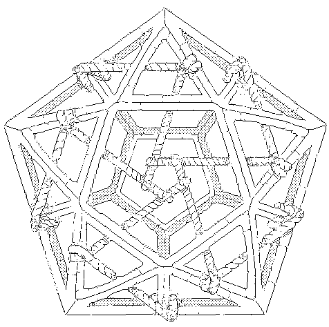

Andes came through a Soies Injection shortly before the first season.
Andes was already present on Dinaisth when Neonev arrived from across Kanikule, the role of Andes in the collapse of Yajnev is unknown, but their arrival coincides with the destruction of Vetetrandes.
Prior the arrival of Andes, a massive office manifested in Laeisth, known as the Andes castel, suggesting an external manipulation of the Soies. Andes also brought through the injection, the tools required to study the Ehrivevnv.
Numerous sculptures occupied the otherwise empty rooms the castel, one of the scultpure, the Known Magye, is a skeletal prism bound by a rope connecting some of its verteces at its center in the shape of a pentagon.
incoming children of bramble known magye neausea nohlxeserre andes castel yajnev